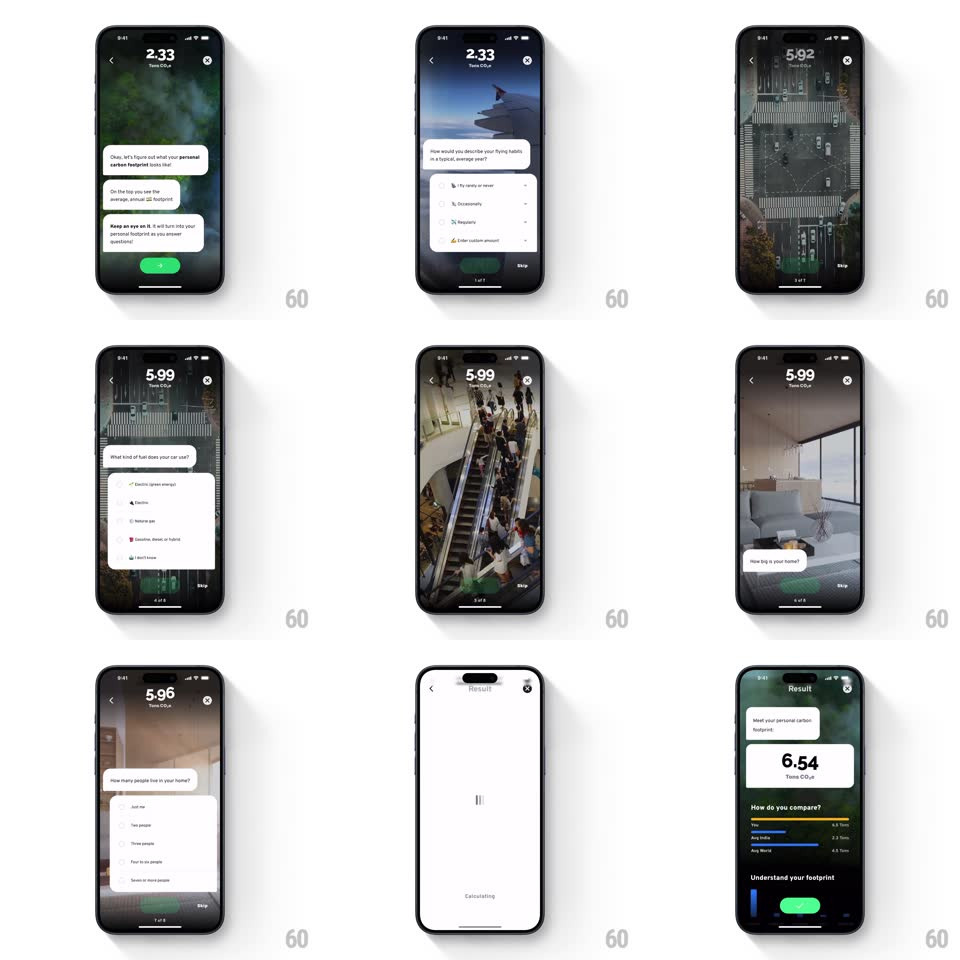

Media
Frame-by-frame

Rebuild this interaction 1:1: Klima's onboarding questionnaire - over looping lifestyle video backgrounds, chat bubbles slide in asking about flights, driving, energy and diet; each answer taps update the live carbon counter ("2.33 -> 6.54 Tons CO2e") pinned at the top.

Rebuild this interaction 1:1: Klima's onboarding questionnaire - over looping lifestyle video backgrounds, chat bubbles slide in asking about flights, driving, energy and diet; each answer taps update the live carbon counter ("2.33 -> 6.54 Tons CO2e") pinned at the top.
## Integration
Integration: stack-agnostic spec - springs given as stiffness/damping, timed motions as duration + curve; map every value to your framework and animation library of choice.
## Scene
Full-screen video backdrops (forest canopy, airplane wing, kitchen, living room) behind a chat stack: white question bubbles, then a white answer card with radio/checkbox rows ("I fly never or rarely" / "Occasionally" / "Regularly"), a green Next button, Skip link, and page dots ("3 of 8"). Top center: the live counter "5.92 Tons CO2e".
## Motion spec
Pattern: chat-style questionnaire with a live counter.
- Each step: the background video crossfades to a new scene (400ms) while the previous chat collapses upward and the new question bubble slides in from the bottom (spring ~300/24), followed by its answer card (120ms later).
- Selecting an answer row: the radio fills green with a small pop (scale 0.7 -> 1, spring ~450/20) and Next lights solid green.
- Tap Next: the counter counts up/down to the new footprint (600ms rolling digits) with a subtle scale pulse at settle; the answered card compresses into the chat history above.
- The final step flips to the Result card: "Meet your personal carbon footprint: 6.54 Tons CO2e" - the counter's last count-up is slower (900ms) for weight.
## Calibration
- Bubbles stack like a chat - history stays visible above, dimmed.
- The counter never leaves the top; it is the through-line of the whole flow.
## Reduced motion
Backgrounds crossfade slowly; bubbles fade in place; counter changes without roll.
## Don't miss
- Each question's video matches its topic (plane for flights, kitchen for diet).
- Skip is always present but quiet; the green Next carries the flow.